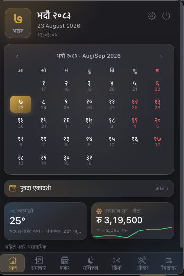

सजिलो
The Nepali desk, in your menu bar.
Bikram Sambat dates, news from nine Nepali newsrooms, bazar and NEPSE rates, and daily rashifal. Checked in seconds, without opening a browser.
FreeOpen sourceNo accountCalendar works offline

सजिलो
Bikram Sambat dates, news from nine Nepali newsrooms, bazar and NEPSE rates, and daily rashifal. Checked in seconds, without opening a browser.
FreeOpen sourceNo accountCalendar works offline

Nine tools, all reading the same day.
AD conversion, tithi, festivals, and public holidays. Works fully offline, so you don't need a connection to know today's date.
Headlines from nine Nepali newsrooms, in Nepali and English, updated through the day.
Kathmandu gold and silver, fuel, and Kalimati vegetable rates, alongside a NEPSE watchlist with live movers, gainers, and losers.
Daily rashifal for all twelve rashis, sourced from Hamro Patro.
Personal notes, plus family renewals and bills, tracked by due date.
Kathmandu weather and air quality, alongside Nepal Rastra Bank exchange rates.
A second clock beside Nepal time, plus Nepali radio stations, right in the app.
Land, weight, VAT, and simple-interest conversions in Nepali units.
The full interface in either language, with Devanagari or English numerals.
Every screen is real, captured straight from the app.
Current beta builds aren't code-signed yet, so each platform shows a one-time security warning on first launch. It takes about 30 seconds to get past, once, per update.
Gatekeeper blocks the app with a two-step warning: drag to Applications, then approve it once in System Settings.
Step-by-step guide with screenshotsSmartScreen flags the installer. Click More info → Run anyway to continue.
Right-click the AppImage → Properties → allow executing, or run chmod +x on it before launching.